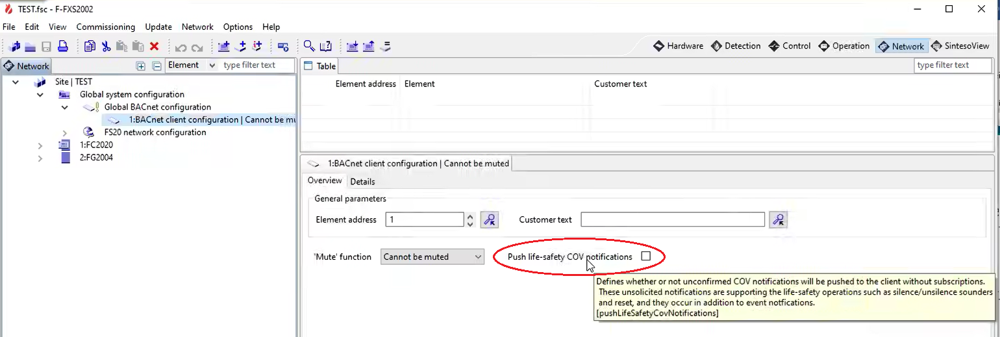

Export the FC726 SiB-X Metafile
- In the panel configuration (FXS7212 tool):
- In Global system configuration > Global BACnet configuration, select the Network > Details tab and select the Enable BACnet communication check box.

- Under Global BACnet configuration, create the BACnet client that will enable Cerberus DMS in the Details tab of the BACnet client configuration, choose the BACnet device ID to specify in the driver. Do not enable Check BACnet client address.

- (Optional) In Global system configuration > Global BACnet configuration, select the Network > Overview tab and select the Push life-safety COV notifications check box.
NOTE 1: To have this functionality, you must restart the Management Station control driver after the FS720 configuration import.
NOTE 2: If you update the Cerberus DMS project, you will need to reimport the Sib-X file to retain the functionality.
NOTE 3: This will add entries at the HQ library level, and the system will not delete these entries. If these entries need to be deleted, please contact the Customer Support Center. 
- Export the SiB-X metafile from the FXS7212 tool. The SiB-X metafile is an XML file containing the complete internal structure of one or more fire control panels.
For more information, refer to the FS720 configuration documentation.